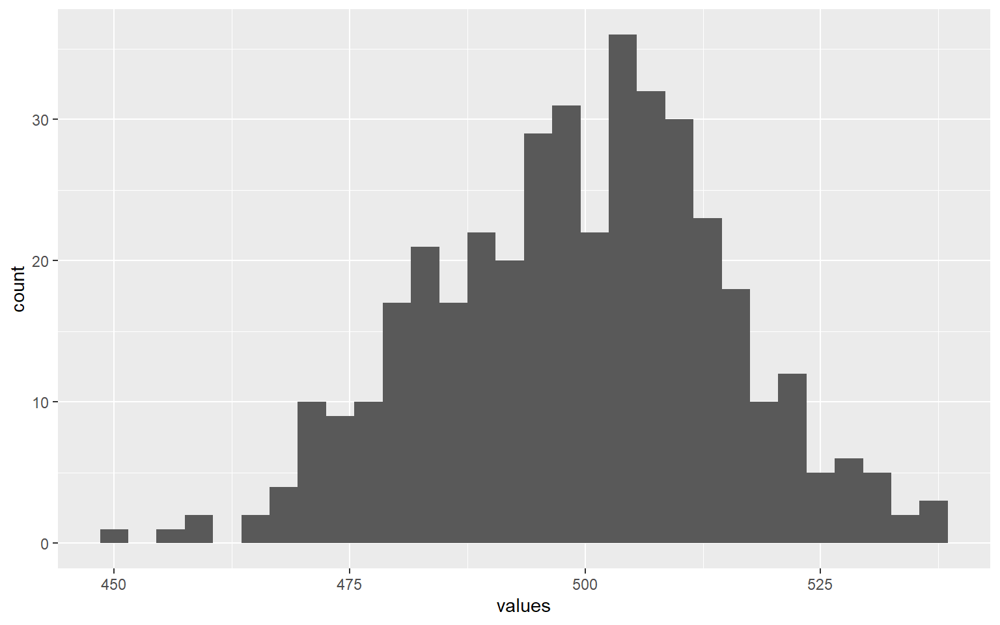

Week 5 Answers (0930)
1 Reminders
Remember to use the project and create a new script in your script folder!
Set the seed to be
2025.Better to use only the functions taught in the course.
2 Control Flow
Print out the characters "NTU" for four times, and then print out the characters "National Taiwan University" for six times.
(There are multiple ways to accomplish this, but I encourage you to use a single for-loop and an if-else statement to complete the task so you can get familiar with these syntax.)
for (i in 1:10){
if (i <= 4){
print("NTU")
}else{
print("National Taiwan University")
}
}## [1] "NTU"
## [1] "NTU"
## [1] "NTU"
## [1] "NTU"
## [1] "National Taiwan University"
## [1] "National Taiwan University"
## [1] "National Taiwan University"
## [1] "National Taiwan University"
## [1] "National Taiwan University"
## [1] "National Taiwan University"3 Binomial Random Sample
- Draw 400 observations from binomial distribution
[size = 1000, prob = 0.5]and compute the mean of the observations.
set.seed(2025)
sample_size <- 400
rdn <- rbinom(n = sample_size, size = 1000, prob = 0.5)
mean <- mean(rdn)
print(mean)## [1] 499.2225- Using the random sample you just generated, create a DataFrame to store the drawn values by using
data.frame()function, and draw the histogram graph to see the distribution.
library(ggplot2)
df <- data.frame(
values = rdn
)
ggplot(df, aes(x = values)) +
geom_histogram()4 Certification Exam
A certification exam is organized for 10 students: Alice, Bob, Charlie, Diana, Ethan, Fiona, George, Hannah, Ivan, and Julia. Each student participates in 10 tests, named test_1, test_2, …, test_10. If the students pass certain amount of tests, they can claim the certificate.
Create a vector
studentsthat contains 10 students’ name.Create a matrix
scoresthat uses thernorm()to generate students score in 10 tests (average score: 60, standard deviation: 15). Let the column name of the matrix betest_1,test_2, …,test_10.
TipHint
Use replicate() function to create the matrix first, create a character vector test_names for column names, then use colnames() to assign test_names as the column names of the matrix.
- Create a dataframe
stu_scoresthat combinesstudentsandscores.
TipHint
data.frame(name = students, scores) is our new dataframe.
- Create a function
certificate_winnercontaining three parameters:data,passing_score,min_passedsuch that a student- passes the test if the his/her score of that test is greater than or equal
passing_score - wins the certificate if the number of passing test is greater than or equal
min_passed
- passes the test if the his/her score of that test is greater than or equal
TipHint
You can use seq_along in the for-loop, such as for(i in seq_along(data[, 1])){}
TipHint
Set a counter that counts the number of tests the student passed in a for-loop. Remember to reset the counter to be 0 when the next loop begins.
TipHint
Create a vector passed_students in the function that saves the student’s name if his/her meets the requirements.
- Answer the following questions:
- Who are the certificate winner if
passing_scoreis 60, and thepassing_scoreis 5? - Who are the certificate winner if
passing_scoreis 65, and thepassing_scoreis 6?
- Who are the certificate winner if
# Part 1: Create student vector
students <- c("Alice", "Bob", "Charlie", "Diana", "Ethan",
"Fiona", "George", "Hannah", "Ivan", "Julia")
# Part 2: Create score matrix
test_names <- c("test_1", "test_2", "test_3", "test_4", "test_5",
"test_6", "test_7", "test_8", "test_9", "test_10")
scores <- replicate(10, rnorm(10, mean = 60, sd = 15))
colnames(scores) <- test_names
# Part 3: Create the dataframe that combines students and scores
stu_scores <- data.frame(name = students, scores)
# Part 4: Create the certificate_winner function
certificate_winner <- function(data, passing_score, min_passed){
# Students names are in the first column
stu_vec <- data[, 1]
# Test names are in 2~11th columns
test_cols <- colnames(data[, 2:11])
# Counter for the number of exam passed
pass_count <- 0
# Students that wins the certificate
passed_students <- c()
# for i in 1:10
for(i in seq_along(stu_vec)){
# Remember the counter should be reset for each student
pass_count <- 0
# for j in 1:10
for (j in seq(test_cols)){
# Passed if score larger than passing_score
if(data[i, j+1] >= passing_score){
# Count how many tests student i passed
pass_count <- pass_count + 1
}
}
# Claims the certificate if number of exam passed > minimum requirements
if(pass_count >= min_passed){
passed_students <- c(passed_students, data[i, 1])
}
}
# Return the winners
return(passed_students)
}
# Question 1
question_1_winners <- certificate_winner(stu_scores, 60, 5)
print(question_1_winners)
# Question 2
question_2_winners <- certificate_winner(stu_scores, 70, 6)
print(question_2_winners)#### Question 1 Answers
## [1] "Bob" "Charlie" "Diana" "Ethan" "Fiona" "Hannah" #### Question 2 Answers
## [1] "Ethan"